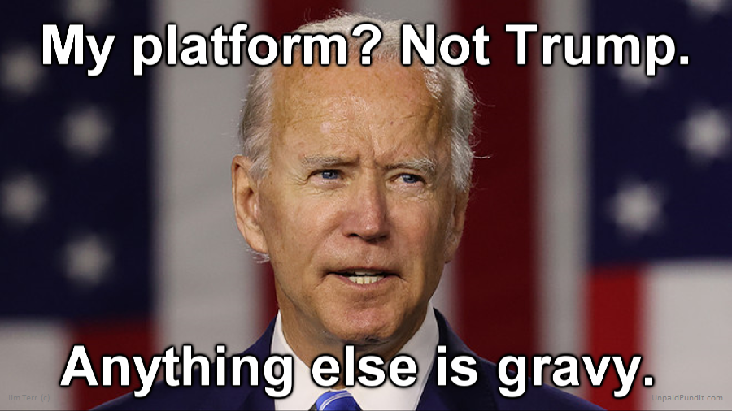
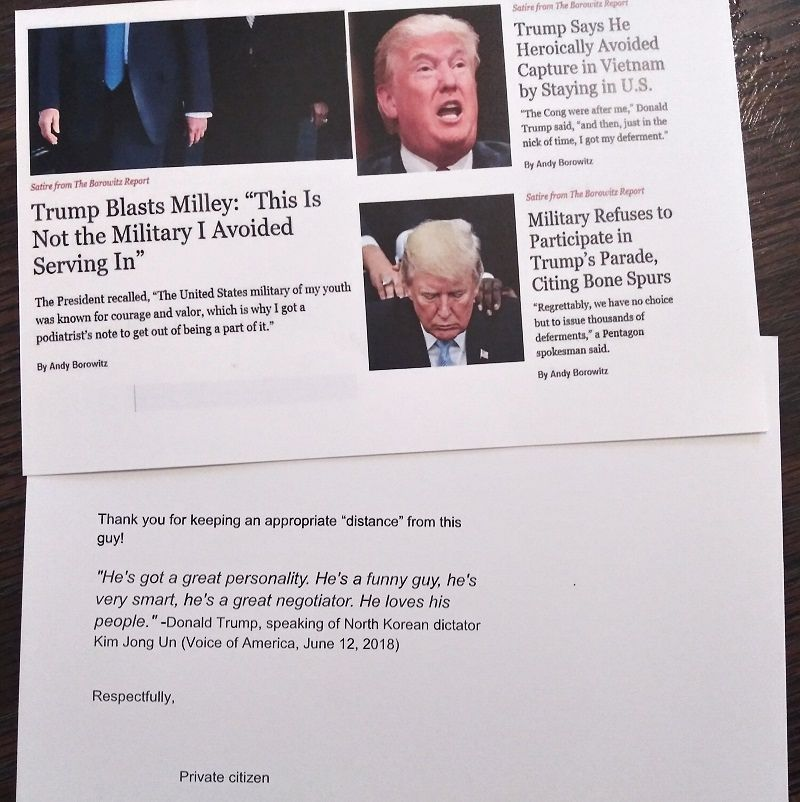
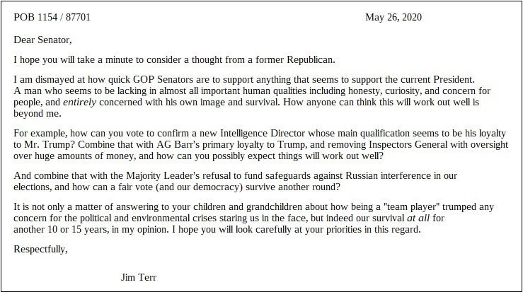
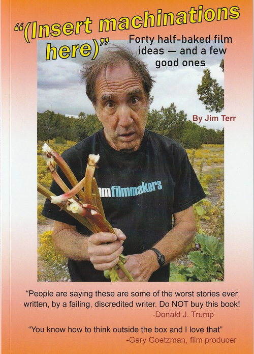

From the movie location and political-hijacking capital of the southwest,
Las Vegas, New Mexico
UnpaidPundit.com
Jim Terr, free-lance
provocateur and trimtabber** on $2.98 a day
From the movie location and political-hijacking capital of the southwest,
Las Vegas, New Mexico

Recent exploits (most recent first)
1. Book in progress,
intended to "plant a seed" and maybe even suggest a way out for DJT

2. Postcard to 92 top Pentagon officials -- "always trying to drive that
wedge"

I could hardly believe Trump didn't get tossed out for the Korea comment, but
what do I know?
(See bumper sticker at bottom)
3. Video, intended to suggest a "template" for the hundreds
insulted by Trump,
to bite back however they can, during campaign season. I tried to make
this a paid Facebook ad,
but they wouldn't take my money.
4. Postcard to 51 GOP
US Senators.
(May get around to mailing to the 197 in Congress, pending funding)*

(And I am technically a former Republican, having switched over
momentarily in 2012
to allow me to run in a dark-horse GOP presidential primary effort in Arizona).
(See "Brill Building" movie below, featuring Valerie Plame)
...and so on, including hitting numerous
notes about DEMAGOGUERY and SPIN
(the twin threats of our time), in this book and this
film:
So I said, call me Trim Tab. --Buckminster
Fuller, 1972
Jim Terr occupies a unique place
in citizen activism. In both his brilliant satire work, and his more
serious essays and outreach, he has a peculiar gift for focusing on
the people who need to be reached and who might be reached,
-James Fallows, national correspondent, Atlantic Monthly
"In his letters and articles, Jim Terr makes too much sense. In
any other country he would have long since been locked up."
-Jonathan Alter, Senior Editor, Newsweek
"A gentle agitator...who's come up with a way to lower the
country's political temperature." For your
amusement, COVID-19 videos only

Spectacularly unsuccessful bumper stickers over
the years
*Though a few of my efforts have been supported by small, individual donors
**Trimtabbing: Something hit me very hard once, thinking
about what one little man could do. Think of the Queen Mary—
the whole ship goes by and then comes the rudder. And there's a tiny thing
at the edge of the rudder called a trim tab.
It's a miniature rudder. Just moving the little trim tab builds a low
pressure that pulls the rudder around.
Takes almost no effort at all. So I said that the little individual can be a
trim tab.
Society thinks it's going right by you, that it's left you altogether. But
if you're doing dynamic things mentally,
the fact is that you can just put your foot out like that and the whole
big ship of state is going to go.
instead of just “preaching to the converted.”
His is a unique
and valuable gift of populism and simplicity, perhaps a result of
his small-town upbringing. His work is wise, hard-hitting, unusually
effective, and deserves the support of everyone who wishes for a
more humane world. Especially in these particularly divisive times,
Jim has a gift for bridging the “divide.”
--
Thom Hartmann,
radio host and author
"Jim Terr's spirit shows through
consistently in the essays, songs, and other
projects he creates. It's the droll, sardonic, 'cut the B.S.'
outlook that is known around the world as 'American.'"
-Paul Greenberg, syndicated columnist
All contents (c) Jim Terr
Contact: Bluecanyon2 -AT- newmexico - DOT- com
(Note: most of these are posted on Facebook where they have many more
views,
but I don't know how to "embed" those for easy viewing here. (Starts
with most recent):
Maskmaker Maskmaker:
https://www.facebook.com/jim.terr/videos/vb.1067727381/10219969974614201